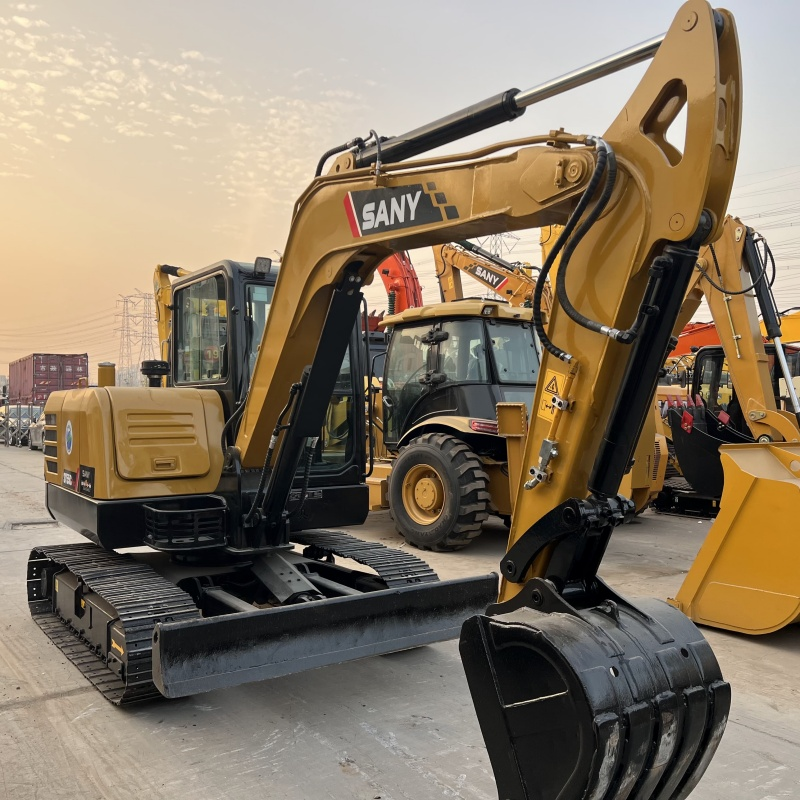

Refurbished SANY SY60 Excavator
The SANY SY60 is a compact and efficient excavator designed to deliver robust performance in a variety of applications. Ideal for urban construction, landscaping, trenching, and material handling, the SY60 stands out as a versatile machine that excels in tight spaces while maintaining the power needed for heavy-duty tasks. Refurbished SANY SY60 excavators present a cost-effective alternative to new machines, allowing businesses to access top-tier machinery at a fraction of the cost.
Honestly, it's almost impossible to buy a brand new excavator from China. They either don't exist or are made in China. If a Chinese seller tells you their Caterpillar/Komatsu/Volvo/Kobelco/Hitachi is brand new, they're lying. Therefore, a refurbished excavator is your best bet.

Here are the detailed specifications for a refurbished SANY SY60C excavator:
Operating Weight and Dimensions
- Operating Weight: 5,800–6,200 kg
- Overall Length: ~5.9–6.2 meters
- Overall Width: ~2.0–2.2 meters
- Overall Height: ~2.6–2.7 meters
- Ground Clearance: ~370–390 mm
- Tail Swing Radius: ~1.7–1.9 meters
- Track Width: 400–450 mm standard
Engine and Powertrain
- Engine Model: Yanmar 4TNV94L or Isuzu 4LE2 turbo diesel
- Rated Power Output: ~39–42 kW (52–56 hp)
- Maximum Torque: ~200–230 Nm @ 1,500 rpm
- Fuel Tank Capacity: ~120–140 liters
- Gradeability: Up to 35°
- Travel Speed: 3.5–5.0 km/h
- Swing Speed: ~10–11 rpm
Hydraulic System
- Main Pump Type: Variable displacement axial piston pump
- Flow Rate: ~2 × 100–110 L/min
- System Pressure: Up to 26–28 MPa
- Hydraulic Oil Capacity: ~150–170 liters
- Boom Cylinder Bore: ~95 mm
- Arm Cylinder Bore: ~80 mm
- Bucket Cylinder Bore: ~70 mm
Performance Metrics
- Bucket Capacity: 0.25–0.3 m³
- Max Digging Depth: ~3.8–4.1 meters
- Max Reach (Horizontal): ~6.8–7.2 meters
- Max Dump Height: ~4.5–4.8 meters
- Bucket Digging Force: ~45–50 kN
- Arm Digging Force: ~30–35 kN
Cab and Operator Features
- Cab Type: ROPS/FOPS certified
- Display: LCD monitor with diagnostics and fuel tracking
- Controls: Dual joystick pilot controls with adjustable sensitivity
- Comfort: Air-conditioned cab, adjustable suspension seat
- Visibility: Panoramic glass with optional rear-view camera
Smart Features and Efficiency
- Eco Mode: Adaptive engine output for fuel savings
- Auto Idle: Reduces RPM during inactivity
- Centralized Lubrication: Optional for reduced maintenance
- Telematics Ready: Some refurbished units support remote diagnostics
Attachments Compatibility
- Standard Bucket: 0.25–0.3 m³
- Optional Tools: Hydraulic breaker, grapple, compactor, ripper
- Quick Coupler: Hydraulic or manual options available
Refurbishment Scope
Refurbished SY60 units typically include:
- Engine overhaul (injectors, turbo, seals)
- Hydraulic pump recalibration or replacement
- Electrical system rewiring and sensor testing
- Cab restoration (seat, controls, HVAC)
- Structural repairs (boom welding, bushing replacement, repainting)
Overview of the SANY SY60 Excavator
The SANY SY60 is a 6-ton class excavator, making it a perfect choice for small to medium-scale construction projects. It’s known for its compact design, which allows it to work in confined spaces, such as city environments or residential areas. Despite its small size, the SY60 delivers substantial lifting and digging power, making it capable of handling various tasks such as trenching, landscaping, material loading, and excavation.
Refurbished models offer the same high-quality features and performance as new ones, but at a more affordable price. By investing in a refurbished SY60, businesses can avoid the steep depreciation that comes with purchasing a new machine, while still benefiting from the excavator's advanced technologies and reliability.
Key Features of the SANY SY60 Excavator
The SANY SY60 is designed to provide exceptional value through its efficient performance, advanced hydraulics, and operator-focused design. Below are the standout features that make the SY60 a popular choice among compact excavator users:
Engine and Power
-
Engine: The SY60 is equipped with a Yanmar 4TNV98 engine, a four-cylinder diesel engine known for its fuel efficiency and reliability. This engine produces approximately 42.5 kW (57 horsepower), providing the machine with ample power for digging, lifting, and other heavy-duty tasks while maintaining excellent fuel economy.
-
Hydraulic System: The SY60 is fitted with an advanced hydraulic system designed to ensure high operational efficiency. The hydraulic components are optimized to reduce fuel consumption and increase productivity. It offers precise control over lifting, digging, and movement, making it highly responsive to operator input.
-
Fuel Efficiency: The combination of the Yanmar engine and advanced hydraulics ensures excellent fuel efficiency, which reduces overall operating costs. The SY60 is designed to deliver maximum performance without unnecessarily high fuel consumption, making it ideal for both large and small projects.
Digging and Lifting Performance
-
Maximum Digging Depth: The SY60 offers a maximum digging depth of 4.5 meters (14.8 feet). This depth is well-suited for tasks such as utility installation, trenching, and foundation work.
-
Lifting Capacity: The lifting capacity of the SY60 is approximately 2,500 kg (5,500 lbs) at a full reach, making it capable of lifting heavy materials such as soil, debris, or construction supplies. This high lifting capacity ensures that the machine can tackle demanding material handling jobs with ease.
-
Bucket Capacity: The typical bucket capacity for the SY60 is around 0.2-0.3 cubic meters, depending on the attachment. This allows the machine to handle a variety of materials, including dirt, rocks, and other construction debris, with speed and precision.
Compact Design for Enhanced Maneuverability
-
Tail Swing Radius: One of the most advantageous features of the SY60 is its reduced tail swing radius, which allows the excavator to operate in confined spaces where other larger machines may struggle. Whether you’re working on a narrow construction site, near walls, or in a residential area, the compact design makes the SY60 highly maneuverable.
-
Undercarriage: The undercarriage of the SY60 is designed for excellent stability on uneven ground. Its tracks offer optimal traction, allowing the machine to operate on sloped surfaces and rough terrain without compromising performance.
Operator Comfort and Safety
-
Operator Cabin: The SY60's operator cabin is spacious and designed for comfort, offering an adjustable seat, ergonomic controls, and air conditioning (depending on the model). The large windows provide clear visibility, making it easier for the operator to work safely and efficiently.
-
Safety Features: Like many of SANY’s excavators, the SY60 comes equipped with ROPS (Roll-Over Protection System) and FOPS (Falling Object Protection System), ensuring the safety of the operator in case of an accident. Additionally, the machine has a well-designed hydraulic system that provides smooth operation, further reducing the risk of mistakes or accidents on the job.
Advantages of Purchasing a Refurbished SANY SY60 Excavator
While the SANY SY60 offers numerous benefits in its new form, opting for a refurbished SY60 can offer significant advantages for businesses looking to maximize their return on investment.
Cost Savings
The biggest advantage of purchasing a refurbished SY60 is the significant cost savings. Refurbished models can cost 30-50% less than new machines, allowing businesses to invest in quality equipment without overextending their budget. This savings can be especially important for companies looking to purchase multiple machines or those with smaller budgets for capital expenditures.
Certified Quality and Performance
When buying a refurbished excavator, it is important to ensure that it has been thoroughly inspected and restored. Reputable refurbishers conduct detailed inspections of the machine’s key components—such as the engine, hydraulics, undercarriage, and electrical systems—to ensure everything functions properly. Refurbished SY60s are often restored to like-new condition using high-quality replacement parts, making them just as reliable as a new model.
Minimal Depreciation
New machinery depreciates quickly, and a significant portion of its value is lost within the first few years of use. A refurbished SY60 has already experienced much of its depreciation, meaning that the buyer will retain more value over time. This makes it an attractive option for businesses seeking to maximize their ROI.
Environmental Responsibility
Choosing a refurbished excavator is also an environmentally conscious decision. By opting for a refurbished machine, you’re extending the life cycle of an existing piece of equipment, thereby reducing the demand for new resources and the environmental impact associated with manufacturing a new machine. This is a sustainable choice that helps minimize waste and conserve resources.
Maintenance and Care for a Refurbished SANY SY60
To keep a refurbished SY60 excavator running smoothly, it’s essential to follow proper maintenance procedures. Here are some maintenance tips to ensure the longevity of the machine:
-
Hydraulic System Maintenance: Regularly inspect and maintain the hydraulic system. Ensure that the fluid levels are optimal and look for signs of leakage or wear. Hydraulic components should be checked regularly to ensure proper function.
-
Engine and Oil Changes: Follow the manufacturer’s guidelines for oil changes and engine servicing. Keeping the engine clean and well-maintained will prolong the life of the machine and ensure it operates efficiently.
-
Track and Undercarriage Maintenance: Inspect the tracks for wear and tension. Ensure that they are properly aligned and not too loose or too tight. The undercarriage should be checked for signs of damage or wear, and any issues should be addressed promptly.
-
Regular Inspections: Conduct regular inspections of the machine’s structural components, such as the boom, bucket, and arm, to ensure that there are no signs of damage or stress. Catching issues early can help prevent costly repairs down the road.
Conclusion
The SANY SY60 excavator is a reliable and compact machine that delivers impressive performance for a variety of tasks. Whether you need to dig trenches, load materials, or perform heavy lifting, the SY60 offers versatility and power in a compact package. A refurbished SY60 excavator is an excellent investment, providing all of the benefits of a new machine at a much lower cost. By purchasing a refurbished model, businesses can save money, reduce depreciation costs, and gain access to high-performance equipment without the upfront investment of a new machine.
With its fuel-efficient engine, compact design, and advanced hydraulic system, the SY60 is well-suited for small to medium-scale projects. Properly maintained, a refurbished SY60 can provide years of reliable service, making it a valuable addition to any fleet.
Our Commitment
- 2 years / 4000 hours warranty.
- EPA certified.
- No sweatshop labor.
Contacts

- [email protected]
- Youtube Instagram Facebook
- Navigation: G206 (Sishu Bridge) in Changfeng County, Hefei City, Anhui Province, 200 meters north to the east